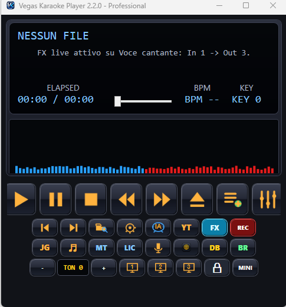
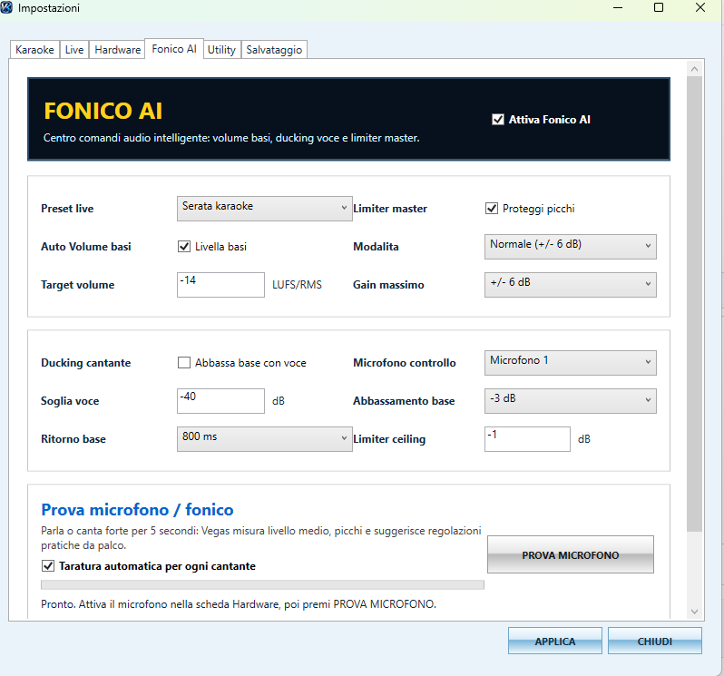
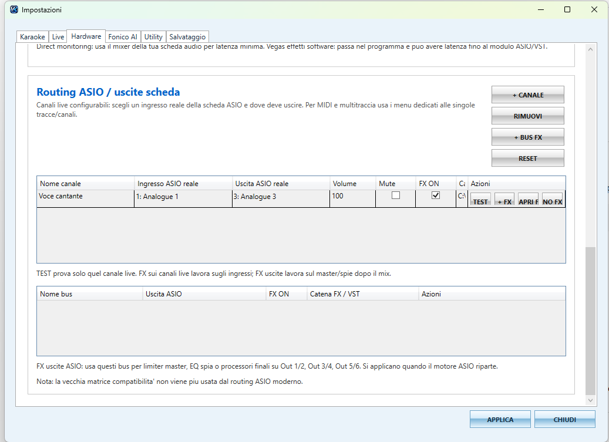
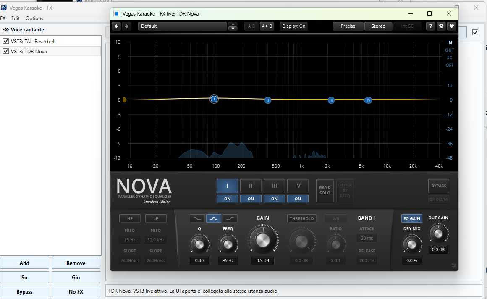

La promozione sta per scadere: dopo il 18/07/2026 il prezzo della versione Professional salirà a 79€.
Karaoke su PC, tablet e telefono con QR Code
La suite completa per karaoke e serate live: guida temporale di attacco, monitor tablet con modalità Testo, Piano e Chitarra, più microfoni ASIO, FX VST2/VST3 anticlick, Fonico AI e gestione professionale di playlist e mixer.
Audio automatico
FX live
Routing reale
Assistente IA


Novità della versione 2.3.1
Un aggiornamento importante per sincronizzazione, monitor tablet, audio ASIO, microfoni multipli, VST e Fonico AI.
⏱️ Guida temporale di attacco
Nuova guida visiva per anticipare l’attacco delle righe karaoke, configurabile per posizione, colore, altezza e larghezza.
🖥️ Testi ottimizzati per monitor 4:3
Migliorato l’adattamento automatico dei testi sui monitor con formato 4:3.
📱 Monitor tablet esteso
Nuove modalità Testo, Piano e Chitarra, con compatibilità migliorata per iPad.
🎵 MP3 Karaoke5 / Lyrics3 corretti
Corretta la lettura dei tempi sillabici che poteva duplicare le righe e compromettere la sincronizzazione.
🎤 Più microfoni ASIO
Gestione contemporanea di più microfoni con ingressi, uscite, volumi ed effetti indipendenti.
🎛️ VST2/VST3 asincrono anticlick
Migliorata la stabilità ASIO e aggiunto il processamento asincrono degli effetti con protezione anticlick.
🎚️ Mixer e finestre compatte
Migliorati mixer, mute, ripristino impostazioni e disposizione dei comandi nelle finestre compatte.
⏭️ Dissolvenze da 6 e 8 secondi
Aggiunte nuove durate di dissolvenza per il passaggio alla canzone successiva.
🤖 Fonico AI corretto
Auto Volume viene ora applicato correttamente anche ai brani avviati dalla playlist.
Funzioni audio professionali già incluse dalla versione 2.0
La versione 2.3.1 porta Vegas Karaoke Player nel mondo audio live professionale.
🎚️ Fonico AI
Auto Volume basi, ducking voce e limiter master per mantenere l'audio più stabile durante la serata.
🔊 Auto Volume basi
Livella basi troppo basse o troppo alte verso un target impostabile in LUFS/RMS.
🎤 Ducking cantante
Quando entra il microfono, la base può abbassarsi automaticamente e tornare gradualmente.
🧱 Limiter master
Protegge dai picchi audio e mantiene il volume master più controllato.
🎧 ASIO reale
Gestione migliorata con ingressi e uscite fisiche reali della scheda audio.
🎛️ FX/VST2/VST3 live
Effetti live su microfono, multitraccia e uscite: riverberi, EQ, compressori e plugin compatibili.
🎚️ Multitraccia Band Pro
Routing professionale, canali separati e gestione più avanzata delle uscite.
🤖 Bruce aggiornato
Bruce conosce le nuove funzioni audio, Fonico AI, FX, ASIO, VST e Utility.
Il controllo audio intelligente per il live karaoke
Fonico AI aiuta a uniformare il volume delle basi, abbassare la musica quando il cantante usa il microfono e proteggere il master dai picchi. Una funzione pensata per DJ, locali, animatori e serate live.
Apri pagina Fonico AI
ASIO, ingressi reali, uscite separate e plugin VST
La nuova gestione audio permette di lavorare con schede ASIO, microfono live, bus FX, uscite separate e catene VST2/VST3 per un setup più vicino a una regia professionale.
Scopri Audio Pro
Effetti professionali sul microfono e sulle uscite
Aggiungi riverberi, equalizzatori, compressori e plugin VST compatibili su microfono, multitraccia e uscite. Ideale per migliorare voce e mix durante una serata.

Resta tutto il mondo Vegas Karaoke
🎤 Player karaoke
MP3, MIDI, KAR, CDG, MP4, KFN/K5 compatibili, LRC/TXT, cambio tonalità e multi monitor.
📚 Database basi
Ricerca per cantante e titolo, Base OK, alias, import cartelle, ritrova file e playlist.
🎼 Crea Karaoke AI
Creazione karaoke automatica, manuale, LRC, Editor Cori, MP3 e MP4 karaoke.
🎬 Jangle Live
Pad audio, GIF/video, testo animato, foto/slideshow, set personalizzati e Stop Tutto.
🛠️ Utility
Logo 3D GIF Studio e Convertitore Universale per preparare materiale da usare nel live.
🎹 Banco Suoni Pro
Banco suoni scaricabile separatamente per utenti Professional.
Download Vegas Karaoke Player 2.3.1
Versione 2.3.1 pubblicata il 16/07/2026 con monitor karaoke su tablet o telefono tramite QR Code, dissolvenza tra brani, backup immediati e miglioramenti a FX, audio/MIDI e mixer.